Real Time Direct Memory Access (RTDMA) Lab#
The objective of this lab is to use the Real Time Direct Memory Access (RTDMA) controller to regularly service the Analog-to-Digital Converter (ADC) in a real-time data processing application. By using the DMA to move data, the CPU is saving instruction cycles that could be used on other critical tasks. Specifically, we will be using the EPWM and ADC modules to generate and sample a PWM waveform at a chosen sampling rate. The DMA will then be used to store the ADC samples in a ping pong buffer, so groups of samples can simultaneously be processed by the CPU in an interrupt service routine (ISR).
Solution#
The Academy lab modules provide step-by-step instructions for users to follow along and carry out; however, the completed software solutions are also available in the device’s SDK.
See your device’s specific SDK to obtain this lab’s software solution.
You can download your device’s SDK by going to the device’s product page on TI’s website and navigating to the ‘Design & Development’ and ‘Software Development’ tabs.
This specific lab’s solution can be found in: [Device_SDK_Install_Path]/examples/driverlib/single_core/rtdma.
Overview#
In this lab, we will use the SysConfig GUI to configure an EPWM module and generate a PWM waveform. The ADC will then be set up to sample the PWM waveform at a chosen sampling rate. At the end of each ADC conversion, the ADC will trigger the DMA module (rather than triggering an interrupt on the CPU).
The first time that the DMA is triggered will be the start of the first ‘Transfer’. Since we will
have configured the DMA to generate an interrupt at the start of ‘Transfers’, the DMA will
immediately trigger an interrupt before the first ‘Burst’ is sent. This very first interrupt should
set the DMA destination address to the Ping Buffer, while the CPU copies the contents of the still
empty Pong Buffer into a buffer called AdcBuf. During the next interrupt, the destination address
of the DMA will change to the Pong Buffer, while the CPU copies from the Ping Buffer. Because we
set the ‘Transfer’ size of the DMA to be 50 ‘Bursts’, the DMA interrupt will be triggered on every
50th ADC conversion before the first ‘Burst’ of the ‘Transfer’. You can see the details of the
interrupt in the dma_Ch1ISR code block included later in the lab.
You will be able to view the contents of any of these buffers in Code Composer Studio (CCS). In this application, the DMA allows the CPU to reclaim instruction cycles that would have been necessary to continuously copy data from the ADC registers into memory, which allows for more instruction cycles to be allocated for other tasks.

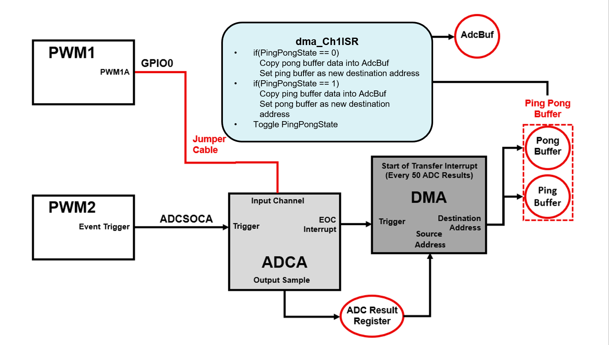
Lab Setup#
Hardware Setup#
Required hardware for this lab:
ControlSOM with the supplied USB cable.
1 jumper cables.
Oscilloscope (optional).
This lab exercise is intended for the F29H85x ControlSOM. Before continuing this lab, please be sure to reference the ControlSOM User Guide for hardware setup details.
Using the supplied USB cable, connect the USB Type-C connector into your C2000 board and the USB Standard Type-A connector into your computer’s USB port.
Please note that a docking station is recommended to successfully run this lab. If you are using the controlSOM docking station, an additional power supply is needed for the docking station. See the ControlSOM User Guide for more details.
Check the power status LEDs (LED1 and LED2) to confirm that the board is powered and provides a JTAG communication link between the device and CCS.
Software Setup#
Required software for this lab:
The device’s SDK
Your device’s software development kit (SDK) download can be found on the “Software Development” section of your device’s product page on TI’s website.
The Code Composer Studio (CCS) platform.
See the CCS User’s Guide for more information about this IDE.
Start a CCS Project#
Our first task is to import an empty project to our CCS workspace.
Open CCS and go to File → Import Project(s). A new window should appear.
Click the Browse button and select the
[MCU_SDK_[DEVICE]_Install_Path]/examples/driverlib/single_core/empty_projectsand click “Select Folder”.Note that the default Windows installation directory
[MCU_SDK_[DEVICE]_Install_Dir]isC:/ti/c2000/MCU_SDK_[DEVICE]_X_XX_XX_XX_XX.
Under Discovered Projects, you should now see the
empty_driverlib_project.

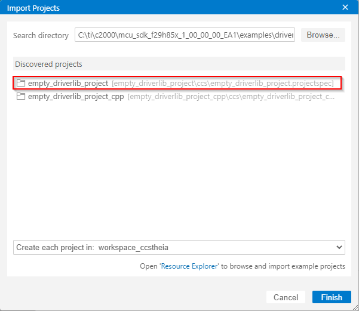
Click Finish to import and copy the
empty_driverlib_projectinto your CCS workspace.After the project has been imported, the project explorer window should look like below:

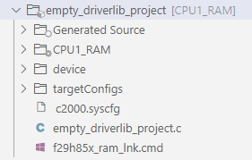
Rename the project:
Right-click on the project in the “Project Explorer” panel. Select Rename from the drop-down menu and rename the project to ‘rtdma_academy_lab’ or a name of your choosing.
Now click the Down Arrow located to the left of the imported project to expand it and select
empty_driverlib_project.c. Right-click on the file, and select Rename to rename the file to ‘rtdma_academy_lab.c’ or a name of your choosing.
Configure the GPIO#
We will now use SysConfig to set up any necessary GPIO signals. For this lab, we will configure one GPIO connected to one of the board LEDs so that we can use this as a visual indicator.
In the project directory, open the
.syscfgfile by double-clicking on it.Navigate to the
Softwaretab in this SysConfig (it should open by default).In the ‘SYSTEM’ group, click + next to ‘GPIO’ to add a GPIO instance.
Change the GPIO settings as shown and described below.
Rename the GPIO to “myBoardLED1_GPIO”.
Change the ‘GPIO Direction’ to an “output”.
Click the box to enable ‘Write Initial Value’ and select “0” as the ‘Initial Value’.
Click on the ‘Pinmux’ drop-down to expand it, and select the board’s LED GPIO (in this case, GPIO9).
To check or confirm which GPIO is connected to your board’s LED, reference your board’s schematics.

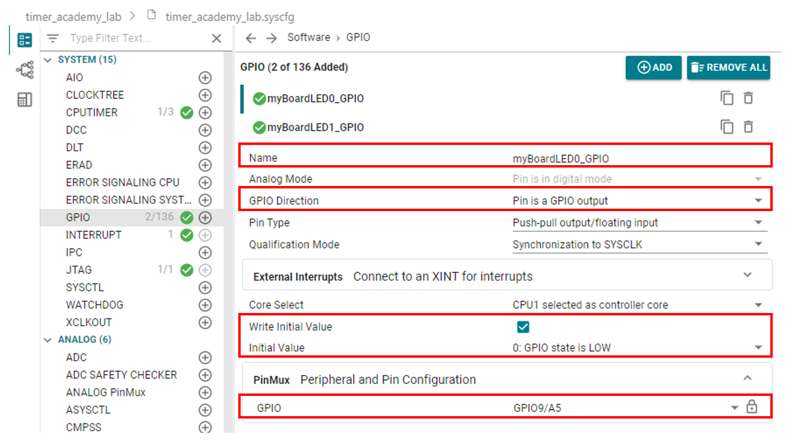
Configure the EPWMs#
Next, we will configure two EPWM modules. The first EPWM module (EPWM1) will be used to generate a PWM waveform that the ADC can sample. The second EPWM module (EPWM2) will only be used to trigger ADC SOCs (start-of-conversions) at a specified rate.
Set Up EPWM1#
For this lab, we will use EPWM1’s channel A to output a 2kHz PWM waveform with a 25% duty cycle. This PWM waveform will be used as a data input source for the ADC.
Building the PWM Waveform#
Note that we will choose for EPWM1A to output a symmetrical PWM waveform by the setting its Time Base Counter (TBCTR) mode to ‘up-down’ count mode. Given that we are selecting “up-down” count mode and want our EPWM waveform to have a frequency of 2kHz, we can use the below formula to calculate the Time Base Period value (TBPRD) needed:
\(\text{Time Base Period}=\frac{EPWM Clock}{2*PWM Frequency}=\frac{100* 10^6}{2* 2000}=25000.\)
Now that we have a TBPRD value, we can focus on configuring the correct duty cycle. Since we are in up-down count mode
and we want our PWM waveform to have a 25% duty cycle (output is high 25% of the time), we can use the below formula to calculate the Counter Compare A value (CMPA value) needed
to produce the appropriate PWM “on” time and “off” time:
\(\text{Counter Compare Value}=(1-\frac{duty}{100})*TBPRD=(1-\frac{25}{100})*25000=18750.\)
Now that we have the CMPA value, we can use the Action Qualifier submodule to select what happens to the PWM output when
the counter matches the CMPA value (TBCTR = CMPA). Note that since we are using up-down count mode, ‘TBCTR = CMPA’ match event occurs twice within an EPWM cycle (once while TBCTR counts up, and once while TBCTR counts back down).
As a result, we can set up the Action Qualifiers as follows:
When TBCTR = CMPA while counting up, force the EPWM1A output to go high.
When TBCTR = CMPA while counting down, force the EPWM1A output to go low.
These calculations and settings will result in the desired PWM waveform:

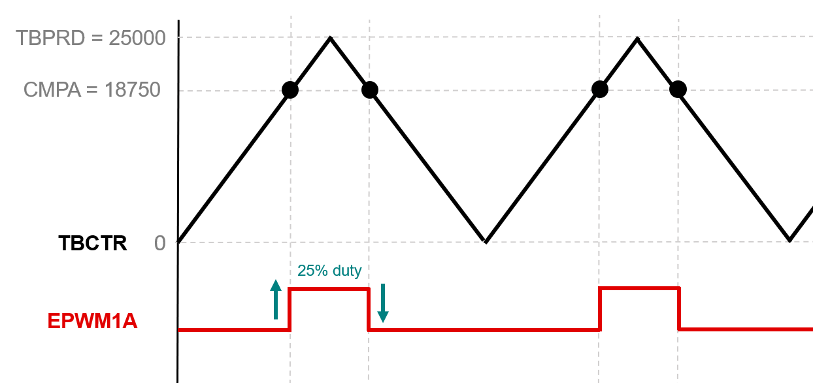
The next step is to implement the above specifications for EPWM1 in SysConfig.
Start by clicking the + by ‘EPWM’ in SysConfig to add one instance of EPWM module.

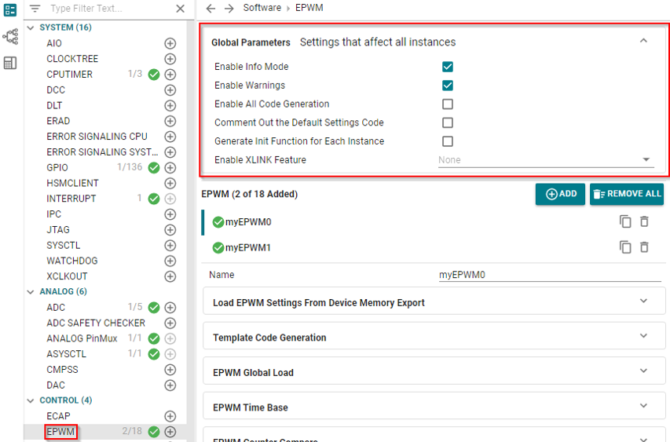
Expand the ‘EPWM Time Base’ and ‘Counter Compare’ drop-downs and apply the changes below.

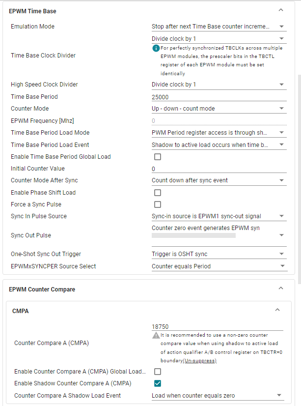
Expand the ‘EPWM Action Qualifier’ drop-down and Output A drop-downs and apply the changes below.

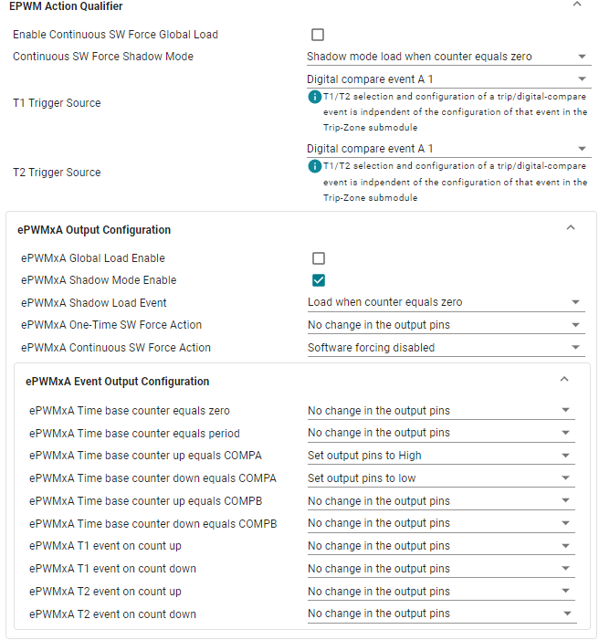
Expand the ‘ePWMxA EPWM Minimum Deadband and Illegal Combo Logic’ drop-down and apply the changes below.

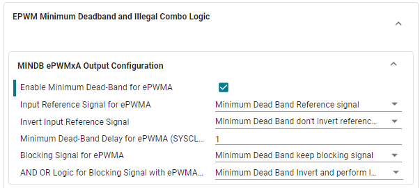
Expand the ‘PinMux Peripheral and Pin Configuration’ drop-down. For ‘EPWM Peripheral’, make sure to select instance
EPWM1. Also, make sure to select ‘GPIO0’ for ‘EPWMA’ and select ‘GPIO1’ for ‘EPWMB’, as shown below. The pin number will vary based on hardware.

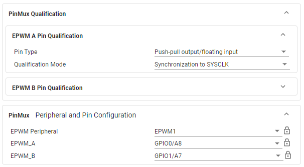
This concludes setting up the EPWM1A waveform output.
Set Up EPWM2#
In this lab, the ADC will be used to sample the generated PWM waveform from EPWM1A at a sampling rate of 50kHz. To accomplish this, we will use another EPWM moduel (EPWM2) to trigger an SOC on the ADC at a rate of 50kHz. Note that the EPWM2 count mode will differ from EPWM1 count mode; EPWM2 will use “up-count” mode. To calculate the TBPRD value needed for EPWM2 based upon the desired frequency and the count mode, we can use the below formulas:
\(\text{Time Base Period}=\frac{f_{TBCLK}}{f_{PRM_output}}-1=\frac{100* 10^6}{50000}-1=1999.\)
The next step is to implement the above specifications for EPWM2 in SysConfig.
Click the ‘+’ by EPWM to open a second instance of EPWM module.

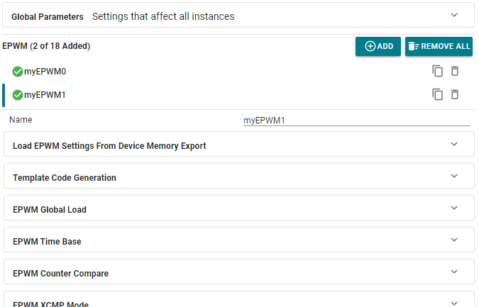
Expand the ‘EPWM Time Base’ drop-dow, and apply the changes below.

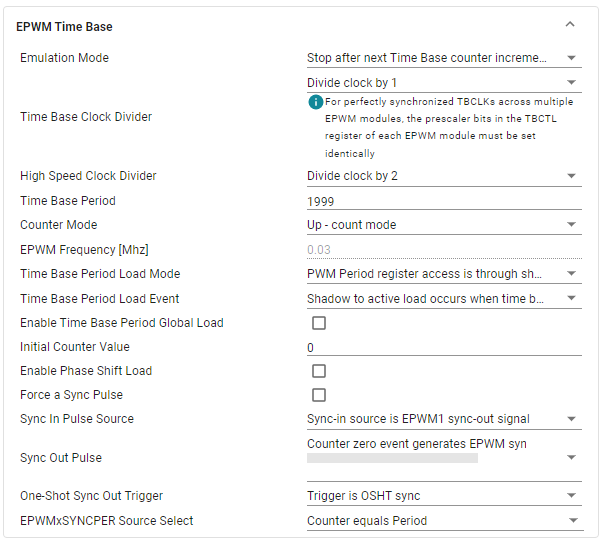
We will now set up the EPWM Event Trigger submodule so that it triggers ADC SOCs every PWM cycle.
Specifically, we will use EPWM2 to generate and ADC SOC every time the TBCTR matches the TBPRD value.
Expand the ‘EPWM Event Trigger’ drop-down and apply the changes below.

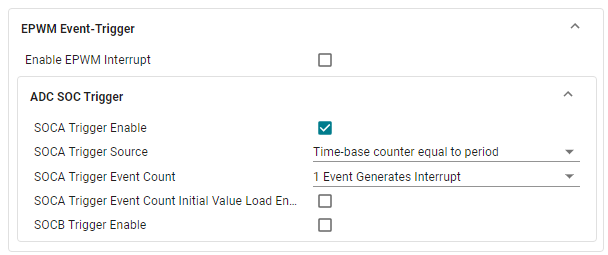
Expand the ‘PinMux Peripheral and Pin Configuration’ dropdown menu, and apply the changes below. Also, make sure to select ‘GPIO2’ for ‘EPWMA’ and select ‘GPIO3’ for ‘EPWMB’, as shown below. The pin number will vary based on hardware.

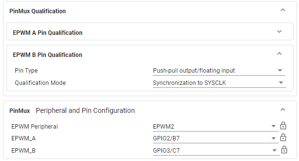
This concludes the configuration of both EPWM modules.
Configure the ADC#
In this section, we will set up the ADC module. The ADC SOC will be triggered by EPWM2, and we will set up an ADC interrupt to occur at the end of an ADC conversion. This interrupt will be used by the DMA so that the DMA knows when to load new samples from the ADC onto the ping pong buffer. The ADC will also be set up in ‘continuous’ mode so that the ADC register always contains the most recent sample.
Click the + by ‘ADC’ in SysConfig to add an ADC instance.
Implement the changes below.
If your device SYSCLK is not 100MHz, you will need to change the ADC Clock Prescaler to achieve the same results.
For the ‘SOC0 Sample Window[SYSCLK counts]’ parameter, the same value may result in a different ‘SOC0 Sample Time[ns]’ on different devices, due to varying SYSCLK frequencies across devices. Make sure that the generated ‘SOC0 Sample Time[ns]’ is about 80ns.

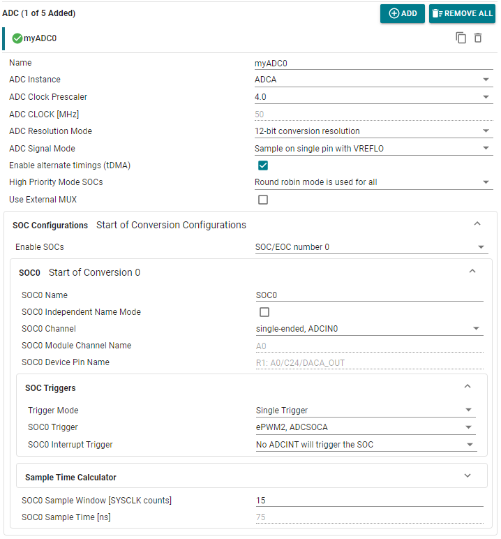
Expand the ‘ADC INT Configurations’ drop-down and make the changes below.

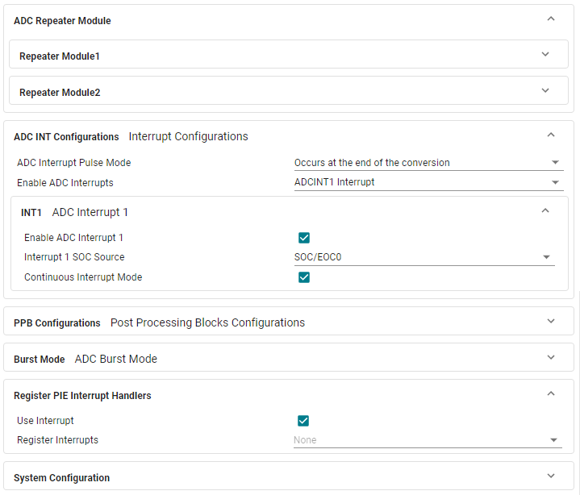
Navigate to the ANALOG PinMux tab and ensure the “Use Case” is set to “CUSTOM”.
Define the “Pins Used” to be the corresponding ADCINA0 pin (A0).

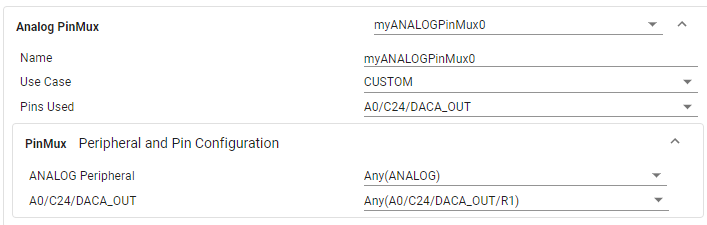
In the Global Parameters section, change the analog references to be an internal voltage of 3.3V. Otherwise, add ASYSCTL by clicking ‘+’ in ANALOG group and then add an internal reference of 3.3V.

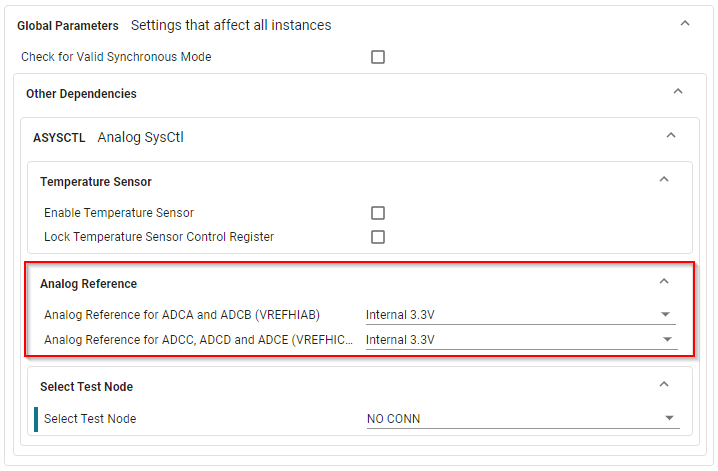
Configure the RTDMA#
In this section, we will configure the RTDMA using SysConfig GUI tool. There are two addresses which will be used during the configuration. These are source and destination addresses. We will configure the trigger and mode of DMA channel 1. The trigger for DMA channel 1 is set to be from ADCA1, which signals to the DMA that a new sample is ready to be moved to the ping pong buffer. Notice that one-shot mode has been disabled and continuous mode has been enabled. Continuous mode ensures that the DMA is re-initialized after it completes a full transfer, which is needed to continuously retrieve samples from the ADC, otherwise, the DMA would halt. Additionally, notice that the word size is set to be 16 bits.
Click + next to ‘RTDMA’ in SysConfig to add an instance of the RTDMA module.
Implement the changes below.

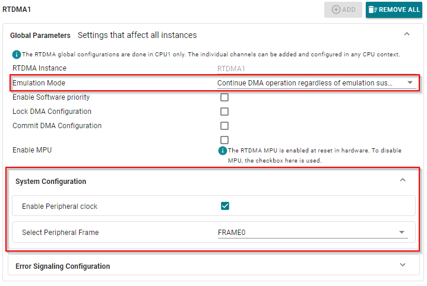

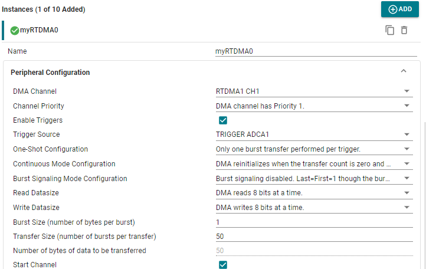

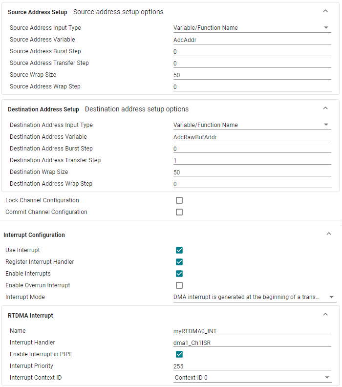
This concludes the configuration of the RTDMA.
Configure the CPU Timer#
In this section, we will set up an instance of a CPU Timer (CPUTIMER0). This timer will be
used to capture the run time of the DMA ISR. It is important that the run time of
the DMA ISR does not exceed the product of the ADC sampling period with
ADC_BUF_LEN because this implies that the DMA will start to overwrite the
contents of the next buffer. Notice that the timer period is set to be the maximum
value of the 32-bit counter. This means the system clock will be driving this counter at a
frequency of the DEVICE_SYSCLK_FREQ.
Click
+next to CPUTIMER in SysConfig to add an instance of the CPU Timer.Implement the changes below.

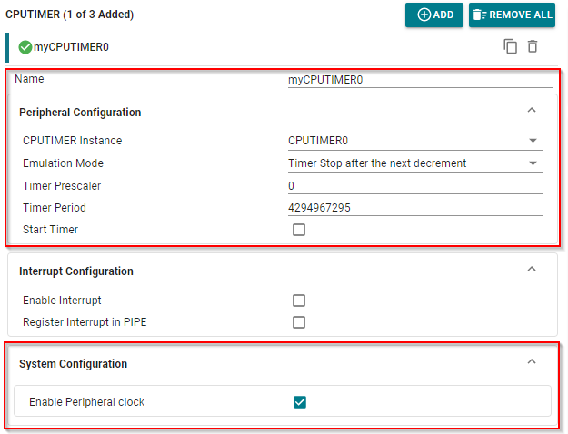
Program Setup#
In your project, double-click on the .c file to open it. Follow the below instructions to develop your program.
Define Global Macros and Variables#
First, we will define some necessary macros and global variables, and we will
configure the destination and source address of the DMA transfer. The global
variable AdcBufRaw points to a ping pong buffer of size 2*50 and type
uint32_t. Accordingly, the ping buffer is from offset 0 to 50/2-1 and the
pong buffer is from offset ADC_BUF_LEN to 2*50-1.
RTDMA1 and RTDMA2 have access to all RAM space, but in this example, we want to
specifically utilize the LDA0 RAM. We use the __attribute__((location(LDA0_RAM_BASE))) volatile uint32_t AdcBufRaw[2*ADC_BUF_LEN] line
to tell the linker to place ‘AdcRawBuf’ in LDA0 RAM. Notice that we have set the DMA channel 1 destination address to be AdcBufRaw,
i.e., the ping buffer, and that we have set the DMA channel 1 source address to be the register that contains the samples from ADCINA0.
In order to use driverlib, make sure that you have included driverlib.h and device.h above these definitions.
A description of these macros and global variables will be addressed in the following sections.
In your .c file, add the following:
//
// Included Files
//
#include "driverlib.h"
#include "device.h"
#include "board.h"
#include "inc/hw_memmap.h"
//
// Globals
//
#define ADC_BUF_LEN 50 // Buffer length.
__attribute__((location(LDA0_RAM_BASE))) volatile uint32_t AdcBufRaw[2*ADC_BUF_LEN]; // Place ping-pong buffer in memory.
volatile uint16_t AdcBuf[ADC_BUF_LEN]; // Buffer for CCS plotting.
volatile uint16_t PingPongState = 0; // Ping-pong buffer state.
volatile uint16_t LedCtr = 0; // Counter to slow LED toggling.
volatile uint16_t TaskDelayUs = 0; // Delay to simulate data processing task.
volatile uint16_t OverCnt = 0; // Counter to store DMA overwrites.
volatile uint32_t TimDiff; // Variable to measure the DMA ISR time.
const void *AdcAddr = (void*)(ADCARESULT_BASE + ADC_O_RESULT0);
const void *AdcRawBufAddr = (void*)AdcBufRaw;
Define main()#
Next, we will populate main() as shown below.
That being said, we still need to know the system clock frequency in order to
configure the EPWM modules necessary for this lab. The system clock frequency
value that is configured via Device_init() is defined as DEVICE_SYSCLK_FREQ
in [projectroot]/Generated Source/SysConfig/device.h. Observe that the main()) function only handles
initialization routines. Most of the activity in this lab will be in the DMA
interrupt service routine (ISR) in the next step.
Copy the below code into your .c after your “Globals” section.
Device_init()must be called to initialize the platform.Board_init()must be called to apply SysConfig-generated settings and code.Since interrupts are used in this example, we must enable interrupts on a global level.
No further program is needed in
main()since the DMA will be triggering interrupts at a specified rate to accomplish our project goals.
//
// Main
//
int main(void)
{
uint16_t i;
//
// Initialize device clock, peripheral clocks and interrupts
//
Device_init();
//
// Board Initialization
//
Board_init();
//
// Enable PIPE Global Interrupt (for INTs and RTINTs) and INT enable in CPU.
//
ENINT;
Interrupt_enableGlobal();
//
// Loop.
//
for(;;) {
// Do nothing.
NOP;
}
}
Set Up the DMA ISR#
Lastly, we will write the interrupt service routine (ISR) for DMA channel 1. The first task of this ISR is
to clear the necessary interrupt flags and initialize some local variables.
Notice that we also reset and start CPUTIMER0 to measure the run time of this
ISR. Copy the below code to your .c for the start of your DMA ISR.
//
// ISR for the RTDMA interrupt.
//
interrupt void dma_Ch1ISR(void)
{
//
// Start and reload the timer.
//
CPUTimer_startTimer(myCPUTIMER0_BASE);
volatile uint16_t *AdcBufPtr = AdcBuf;
volatile uint32_t *AdcBufRawPtr;
uint16_t i;
Next, we will set up our indicator LED to toggle within the DMA ISR at a rate of 1Hz. It is reasonable to assume that the DMA will be able to transfer words at the ADC sampling rate, which is 50kHz. Thus, we know that this ISR is being called at a rate of
\(\frac{\text{sampling rate}}{\text{bursts per transfer}}=\frac{50000}{50}=1000\text{Hz}.\)
Consequently, the global variable LedCtr is used as a counter to divide the
ISR call rate by 1000 in order to toggle the LED at a rate of 1Hz. Add the below code to your DMA ISR.
//
// Blink LED at about 1Hz. ISR is occurring every 1ms.
//
if (LedCtr++ >= 1000) {
GPIO_togglePin(myBoardLED1_GPIO);
LedCtr = 0;
}
The ping pong buffer implemented in this lab is a type of double buffer that allows the CPU to process one buffer of samples from the ADC while the DMA fills the other buffer with new samples. As discussed in the last section, this ISR will be triggered at the start of transfer on DMA channel 1. Thus, this ISR must continuously alternate between the following states:
Process the pong buffer and set the DMA channel 1 destination address to point to the ping buffer.
Process the ping buffer and set the DMA channel 1 destination address to point to the pong buffer.
The global variable PingPongState is used as a state register. Note that
PingPongState is toggled in the ISR. In addition, note that our processing
step involves copying the contents of the ping or pong buffer into AdcBuf,
which is another buffer of size ADC_BUF_LEN. In the debug session, we will
use AdcBuf to view the ADC samples in real-time via the plotting capabilities
of CCS. Add the below code within your DMA ISR.
if (PingPongState == 0) {
//
// Set DMA address to start at ping buffer.
//
DMA_configAddresses(myRTDMA0_BASE,
(const void *)AdcBufRaw,
(const void *)(ADCARESULT_BASE + ADC_O_RESULT0));
//
// Fill AdcBuf with contents of the pong buffer.
//
AdcBufRawPtr = AdcBufRaw + ADC_BUF_LEN;
for (i = 0; i < ADC_BUF_LEN; i++) {
*(AdcBufPtr++) = *(AdcBufRawPtr++);
}
} else {
//
// Set DMA address to start at pong buffer.
//
DMA_configAddresses(myRTDMA0_BASE,
(const void *)(AdcBufRaw + ADC_BUF_LEN),
(const void *)(ADCARESULT_BASE + ADC_O_RESULT0));
// Fill AdcBuf with contents on the ping buffer.
AdcBufRawPtr = AdcBufRaw;
for (i = 0; i < ADC_BUF_LEN; i++) {
*(AdcBufPtr++) = *(AdcBufRawPtr++);
}
}
//
// Toggle PingPongState.
//
PingPongState ^= 1;
In order to simulate more data processing in the DMA ISR, we add a delay that can be changed
via the global variable TaskDelayUs. We will change the value of
TaskDelayUs in real-time using the debug features of CCS. Copy the below code into your ISR.
//
// Delay to simulate more data processing.
//
for (i = 0; i < TaskDelayUs; i++) {
DEVICE_DELAY_US(1);
}
Finally, we stop the counter and calculate the elapsed time it took for the ISR
to complete. We can safely ignore the counter overflow in this case. To see
why, consider a system clock speed of 200 MHz—given that CPUTIMER0 is
32-bit, this would mean that CPUTIMER0 would overflow approximately every
21.5 seconds which is large enough for us to ignore. The number of counter
ticks that it takes for the ISR to complete is stored in TimDiff.
Since the DMA is triggering this ISR at a rate of 1kHz as shown earlier, this
implies that the ISR duration cannot exceed 1ms. If the ISR time exceeds 1ms, the DMA will start
to overwrite the contents of the other buffer before the CPU has a chance to
read it. The number 0.001*DEVICE_SYSCLK_FREQ is the approximate number of
counter ticks needed for a duration of 1ms. Accordingly, if we find that
TimDiff is greater than or equal to 0.001*DEVICE_SYSCLK_FREQ, this implies
that the DMA has started overwriting the contents of the next buffer.
If this is the case, we increment the global variable OverCnt, which stores
the number of times the ISR runtime exceeds 1ms. We can view OverCnt in
real time by using the debug features built into CCS.
Add the below code to complete your DMA ISR.
//
// Get the time stamp and check to see if interrupt completed within the
// required time frame of 1ms. Don't worry about overflows.
//
CPUTimer_stopTimer(myCPUTIMER0_BASE);
TimDiff = 0xFFFFFFFF - CPUTimer_getTimerCount(myCPUTIMER0_BASE);
if (TimDiff >= ((uint32_t)(0.001*DEVICE_SYSCLK_FREQ))) {
OverCnt++;
}
}
DMA Buffer Overwriting Fix
If you find that the ISR is taking too long to complete and the DMA is overwriting the next buffer, try increasing the buffer size and/or decreasing the ADC sample rate. Both of these changes will slow down the DMA and give the CPU more time to process data.
This concludes the coding portion of this lab.
Build the Project#
With the configurations and code complete, we can ‘Build’ the project to check for any errors. Once the project builds without errors, we will connect to the device, load the program to the device, and run it within a debug session.
Right-click on your project and hover over the Build Configurations button until another panel pops up. Select the CPU1_RAM build configuration.
With the RAM configuration selected, the project will be loaded to the RAM memory of the device.
Right-click on your project again and select Build Project(s) to build your program. Fix any compilation errors.
Run the Project#
Now we will start a debug session.
Connect EPWM1A to ADCINA0 using a jumper cable. This will supply the EPWM waveform to the ADC as a signal input. If you have an oscilloscope, you can also connect a probe to your EPWM1A pin to view the waveform on the scope.
Device |
ADCINA0 Pin |
EPWM1A Pin |
|---|---|---|
F29H85x |
119 |
15 |
Ensure that the USB cable from your board is connected to your computer.
Right-click on your project and select Debug Project.
If prompted, check that only CPU1 is selected to load the program to.
This action should re-build your project, connect to the debugger, and load the program to the device.
The DEBUG window should populate and the debugger should have paused at the beginning of your
main().
Now we will continue the debug session and the
main()by clicking the blue Continue button in the upper left corner.Note that there are several other buttons that can be used to help debug your project by stepping through your program line by line. Feel free to explore them here, or see the CCS User’s Guide for more details on its capabilities.
Validate the Project#
With the project now running freely, we can now check to see if the project is running as expected. There are two ways to do so:
When viewing your board, you should see an LED toggling at about 1Hz which indicates that the DMA ISR is being called at 1000Hz as expected.
Next, we can check the ping pong buffer. Open the ‘Memory’ window by going to
ViewandMemory.Enter the address location “AdcBufRaw”.
Turn on Continuous Refresh by clicking on the corresponding button in the upper right corner of the ‘Memory’ window.
Select 16-bit hexadecimal format.
Watch the memory browser update in real-time. If all is well, you should notice that
AdcBufRawoccupies one hundred 16-bit memory locations and roughly 25% percent of the locations have a value of0x0FFFwhile the others contain a values close to0x0000. This indicates that the DMA is transferring the ADC samples correctly into the ping pong buffer and the DMA ISR is correctly alternating the DMA channel 1 destination address pointer between the ping and pong buffers at the start of a transfer.

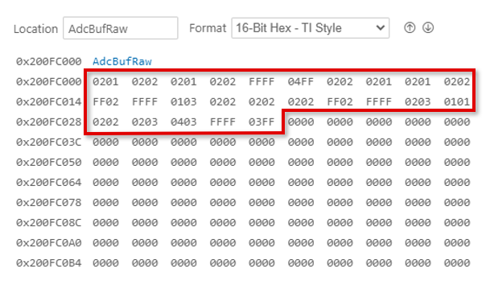
Finally, we will experiment with different values of delay in the DMA ISR. Add
OverCnt,TimDiff, andTaskDelayUsto the watch expression list and enable Continuous Refresh. Play with different values ofTaskDelayUsfrom 0–1000. Observe the changes inOverCntandTimDiff. At some point, you will find a value closer to 1000 that will causeOverCntto start to increment, which implies that the DMA is overwriting the contents of the next buffer. Even though the DMA is overwriting the next buffer, notice that the plot window appears to be unaffected. This is because the waveform we are viewing is periodic, thus, subsequent buffers will all contain the same information. However, if we were viewing an aperiodic waveform, we would be able to observe discontinuities and other artifacts in the signal due to the DMA overwriting the next buffer.
Terminate the Debug Session and Close the Project#
With the project developed and validated, we can close this debug session.
Click the red Stop button at the top of your
DEBUGwindow to terminate the active debug session and disconnect the debuggerYou can return to the
Project Explorerwindow by clicking on the corresponding button at the top of the panel on the left.
This concludes the lab exercise.
Full Solution#
Recall that the completed software solution is available as well. Please refer to the top of this page to review the location of this lab’s software solution.
Lab Summary#
In accomplishing this lab, you should have:
Learned how and why the RTDMA can be used to reduce load on the CPU in a real-life application.
Utilized the CCS environvment and the SysConfig GUI to configure the RTDMA and other peripherals.
Gained familiarity with the basic functions of GPIO, EPWM, ADC, and CPU Timer modules and how they can interact within a system.